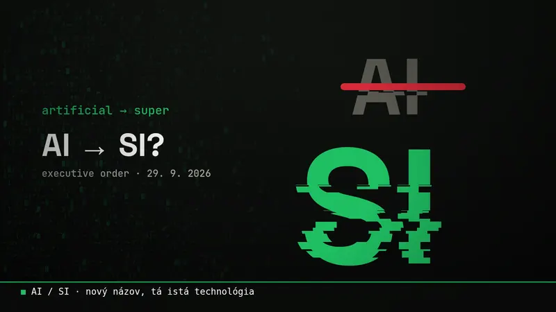
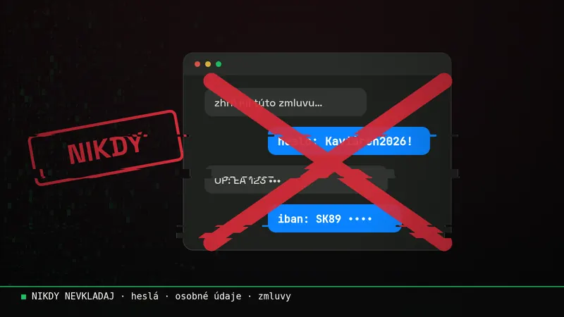
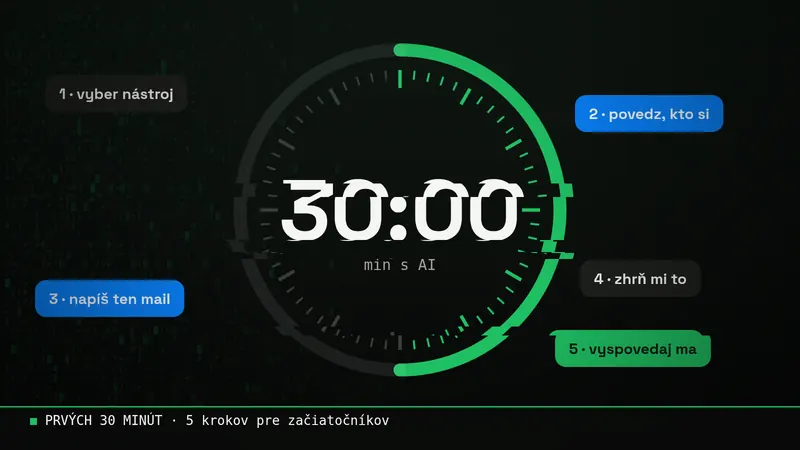

Blog
Z môjho sveta a zo sveta AI.
Novinky z AI, ktoré ma zaujali, aj kúsky z môjho života. Témy vyberám ja sám, po ľudsky.
Nikdy som nebol programátor. Teraz si s AI staviam vlastnú hru.
Vždy som chcel mať vlastnú hru a mal som na ňu milión nápadov. Konečne prišiel čas ich zužitkovať. Hra sa volá Usage of Empires a staviam ju len cez AI. Tu je, ako vznikla, čo v nej je a čo v nej nikdy nebude.

Postavil som systém na šetrenie usage. Zožral mi usage.
Chcel som mať projekty a nápady na jednom mieste, aby s nimi vedeli pracovať Claude aj Grok. Spravil som to tak, že mi to zjedlo týždenný limit za dva a pol dňa. Tu je, čo som sa naučil, a ako usage šetriť po ľudsky.

Counter-Strike: kliatba alebo požehnanie?
Od prvého počítača s Bombermanom cez CS 1.5 u kamošov, modovanie GTA San Andreas, dlhé večery pri FIFA a covidové noci pri Counter-Strike až po deň, keď vyšlo CS2. Z hier sa mi medzitým stala práca.

Postavil som si appku bez akéhokoľvek programovania.
Celé dni som na cestách alebo na akciách a administratíva sa mi kopila v Exceli, poznámkach a správach. Tak som si s AI postavil Event Hub: jedno miesto, ktoré mi všetko zbiera, triedi a samo pripomína.

Rodinný hub: jedna obrazovka pre celú rodinu
Spoločný kalendár, správy a dokumenty na jednom mieste. Dokument stačí odfotiť a poslať jednému kontaktu v telefóne. Starí rodičia si doma len zapnú webovú stránku a vidia všetko.

AI je odteraz SI? Trump premenoval umelú inteligenciu
Americké úrady už nesmú písať „AI“. Odteraz je to „Super Intelligence“, skrátene SI. Musk hneď sľúbil premenovať aj svoju firmu. Čo sa vlastne zmenilo a čo to znamená pre nás v Európe?

Čo AI nikdy nedávaj. Vážne.
AI ti ušetrí hodiny. Jedna zlá správa do chatu ťa ale môže stáť zákazníka, peniaze alebo pokutu. Tu je, čo do nej nikdy nevkladaj, čo vždy over, a prečo to od roku 2025 nie je len dobrá rada.

Prvých 30 minút s AI: 5 vecí, ktoré vyskúšaj ešte dnes
Nemusíš nič inštalovať ani vedieť programovať. Stačí pol hodiny, prehliadač a týchto päť krokov. Na konci budeš vedieť, kde ti AI ušetrí čas, a dostaneš aj checklist na stiahnutie.

Minecraft v Elden Ringu: AI začala remixovať videohry
Internet zaplavili videá, kde sa jedna hra objaví vnútri druhej. Za väčšinou z nich je AI, ktorá za pár hodín napíše kód, na ktorý by modder kedysi potreboval mesiace. Čo sa vlastne deje a prečo to nie je len zábava?